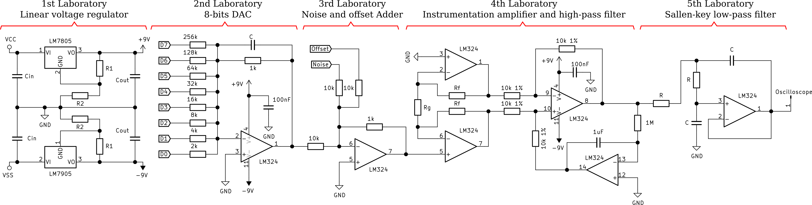
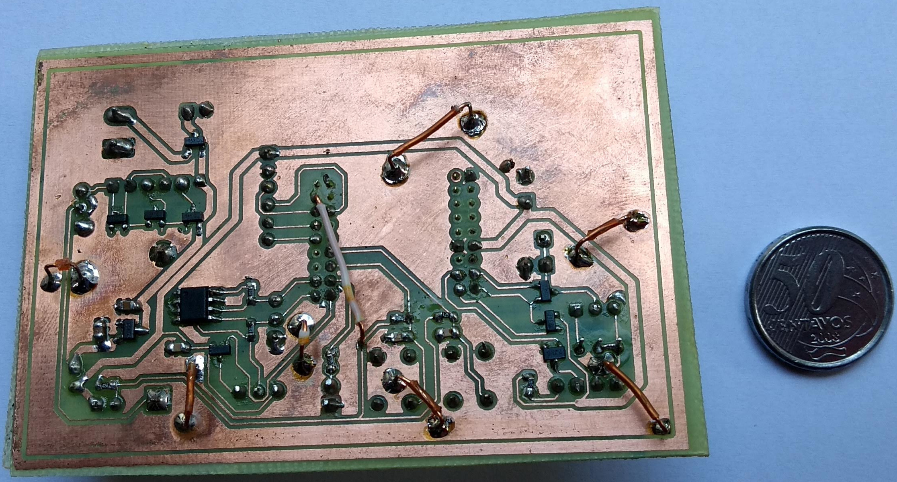
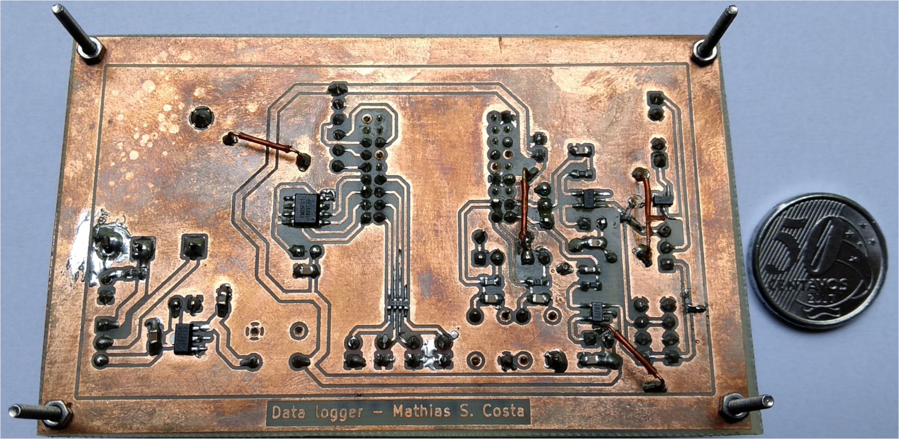
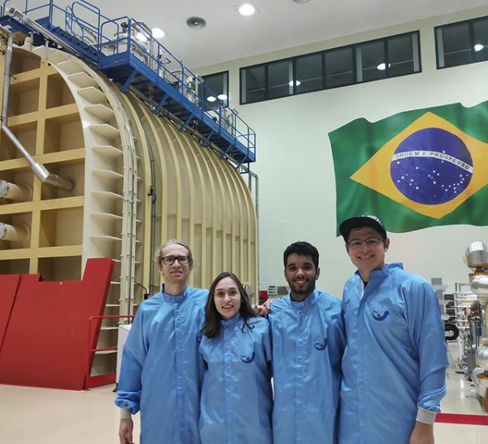
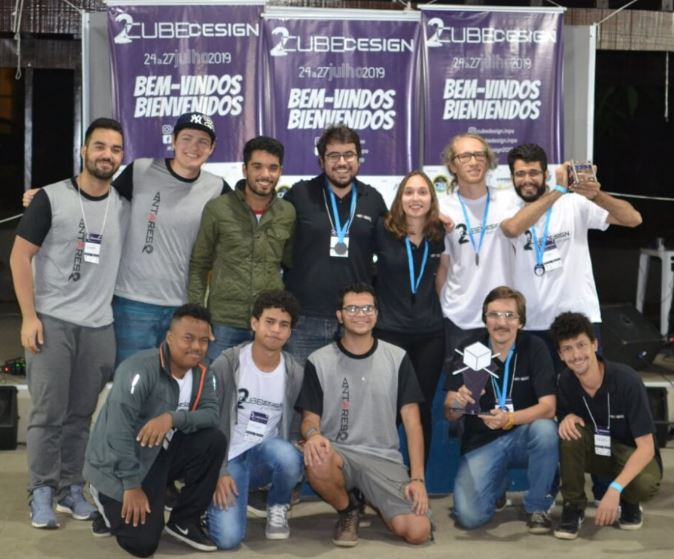
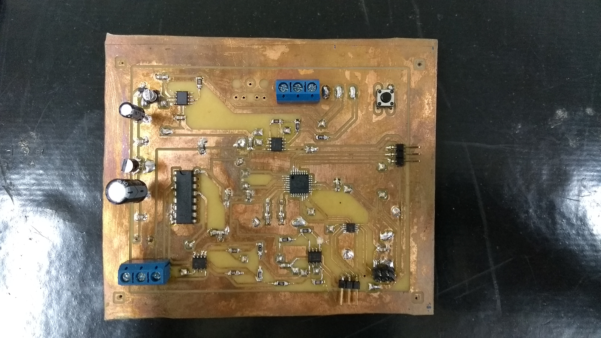
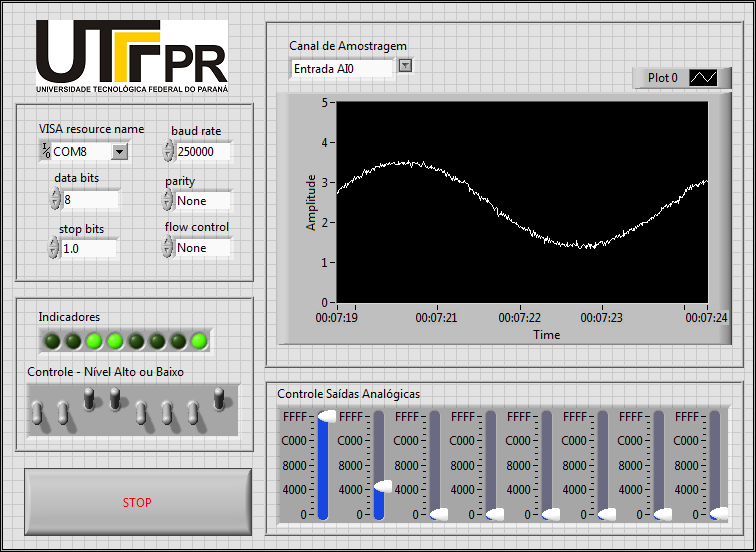

My first experience as a teacher
Just before all the chaos that the COVID-19 pandemic brought to the world, in January 2020 I had the opportunity and the privilege to lead a summer course of basic electronics lab II class. The experience was complete: I had to elaborate the activity scripts, teach the theoretical classes and monitor the students' practical development. The circuit in question that the students had to develop was an ECG signal generator, as well as a circuit for its processing. The complete circuit is shown in the figure below.

The students had to weld components of the warehouse in a punctured phenolite plate, composing the following circuits with operational amplifiers:
- DAC 8 bits;
- Inverter adder;
- Instrumentation amplifier;
- Sallen-key filter;
The figure below shows one of the working circuits and the result seen on the oscilloscope

Water meter IoT device
The circuit that I will show below is one of the products of my master's dissertation. In it I am using a microcontroller NRF51822 for the sensing of a hydrometer and communication of telemetry data via Bluetooth Low-Energy (BLE).
The circuit had to sample voltage signals acquired through an optical sensor, using a low-power comparator. The telemetry data was saved in an EEPROM memory, via the I2C interface, and also sent via BLE.
The biggest challenge of the project was to develop this entire circuit using the harvest of solar energy as an energy source. An energy management circuit had to be developed, which was able to capture energy and store it in a supercapacitor, as well as firmware programming routines and practices were adapted to lower energy consumption.
The figures below show the front and bottom circuit layers of the IoT device that was built.


Low-power datalogger
It was necessary to develop a low consumption datalogger circuit to perform some measurements on my IoT telemetry device in an external environment, developed during the master's degree.
The same microcontroller as the telemetry device, NRF51822, was used to sample voltage levels and store them in flash memory using the SPI interface. For this purpose, an analog conditioning circuit was developed, with operational amplifiers, to limit the bandwidth of the sampled voltage signal.
The figures below show the top and bottom sides of the developed circuit.


Winner of the 2ª CubeDesign! Cubsat project
I had the opportunity to visit one of the most renowned research centers in Brazil, which is the National Institute for Space Research (INPE). In the photo below, I am inside the main laboratory inside the institute, in front of the largest vacuum chamber in Latin America!

I only came to visit the laboratory because I participated in an extracurricular team at Unicamp in space-modeling. The team signed up for the Cubesats (mini satellites) development competition at INPE. In this project, I was responsible for the development of Cubesat's orientation algorithm, using solar panels. We used STM32F103 microcontrollers to process the data on the device, which I had to develop part of the logic and firmware. The figure below shows the ready Cubsat.

The Cubesat developed was subjected to a series of tests, including sensor telemetry, control of a reaction wheel and antenna ejection. The team that best demonstrated results was ours. As a result of this competition, we received first place! In the Figure below a photo is shown at the moment of the award.

RF power splitter simulation on HFSS
During a semester of post-graduation, I attended the discipline of "guidance and radiation of waves". In this period I was able to better understand the phenomena of RF signals. I got in touch with computational tools for high frequency simulation, like CST and HFSS, and designed some devices, like passive filters, waveguides and a Wilkinson power splitter. The figure below shows a power divider that was simulated using the HFSS.

3 channel ECG circuit and computer interface
My final undergraduate work in electronic engineering was the development of an electrocardiograph circuit capable of capturing 3 ECG leads.
In this work, I designed the entire analog and digital circuit for conditioning and digitizing the signals. I also had to develop the firmware for the Atmega328 microcontroller, which communicated via the UART interface with a computer. In turn, the graphical interface, that I programmed in C++ using the Qt library, received the data and showed it on the computer monitor.
The figures below show the manually prototyped circuit and the graphical interface showing the signals.


DAC and ADC controlling plataform
During the end of my graduation I did a scientific initiation. As a product of my work, I designed an electronic device to send and receive analog and digital signals. The circuit consisted of an Atmega328 microcontroller and an IC DAC, whose communication was established via the SPI interface. The circuit was designed using EDA Kicad software and manufactured industrially. The figure below shows the final result.

For the control of the device, I developed an HMI in LabVIEW language, whose function was to send and receive commands via the UART interface. The figure below shows the control interface.
